Разработка кроссплатформенных инструментов для сбора, фильтрации и менеджмента медиа-данных.
Разработал комплекс утилит для автоматизации рутинной работы с файлами и API медиа-ресурсов. Программы выполняют пакетную обработку данных, автоматическое переименование файлов по сложным паттернам в фоновом режиме и семантический разбор тегов.
В Python-приложении реализована API-интеграция с имиджбордом, автоматическое создание thematic HTML-страниц с превью, вывод статистики посещений и сохранений.
Разработал комплекс парсеров для автоматического сбора медиа-контента с крупных зарубежных имиджбордов и веб-платформ через REST API.
Реализовал алгоритм семантического анализа: по общим поисковым запросам скрипты автоматически сопоставляют, фильтруют и выгружают связанные метаданные (имена персонажей, категории, авторские права/копирайты) с сортировкой по популярности.
Скомпилировал десктопные решения в независимый автономный .exe формат.
У меня много разных скриптов и программ для различных мелких задач. Например, Python-скрипты для форматирования файлов (в частности, из созданного в расширении файла базы данных сделать html с отфильтрованными каналами и видео, или из базы с сохраненными персонажами сделать html с фильтрами по классам/категориям, постерами и т. п.), автоматическое переименование сохраняемых в данный момент в папку файлов по заданному паттерну (работает, пока не закроешь программу), парсинг страниц комиксов...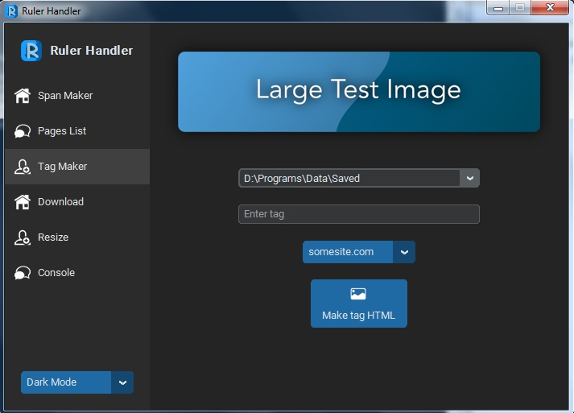
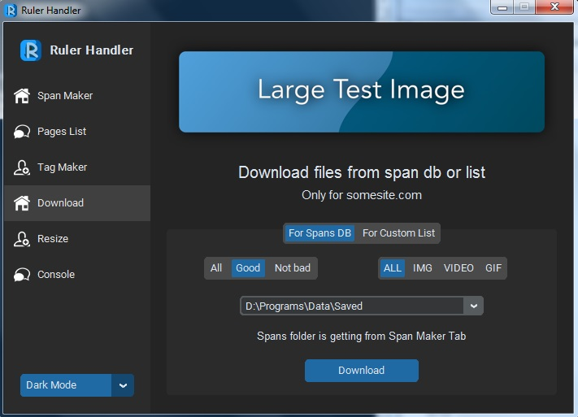
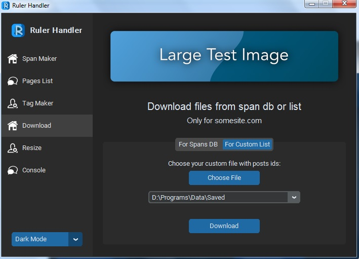
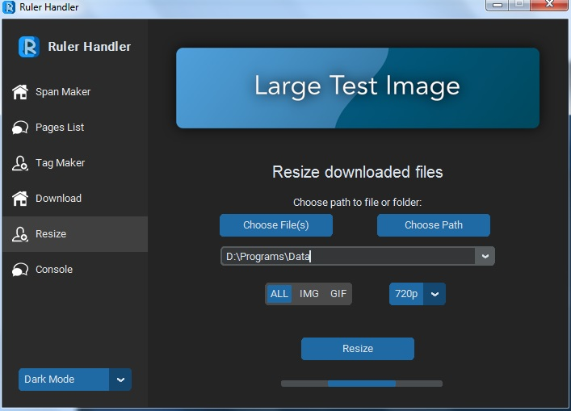
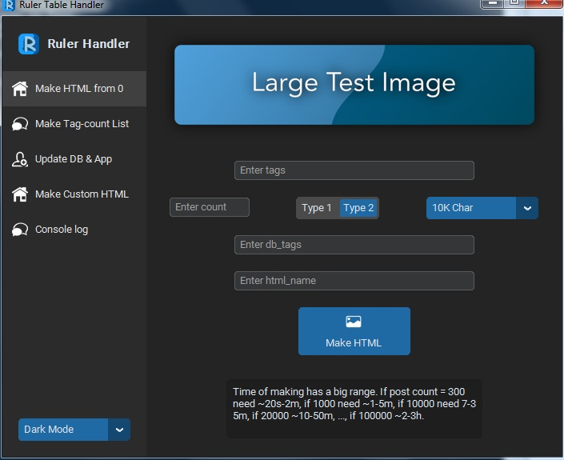
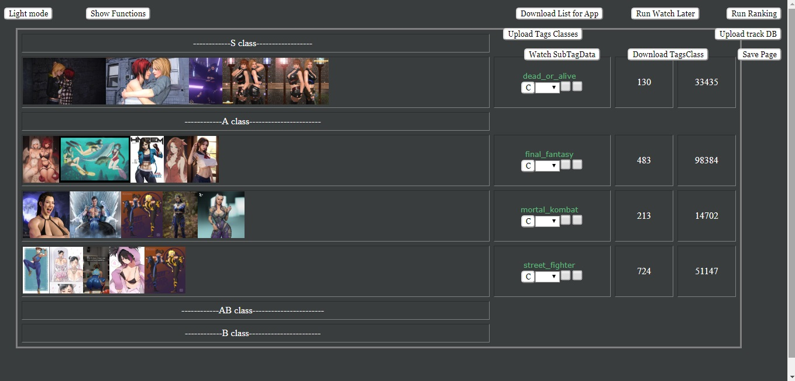
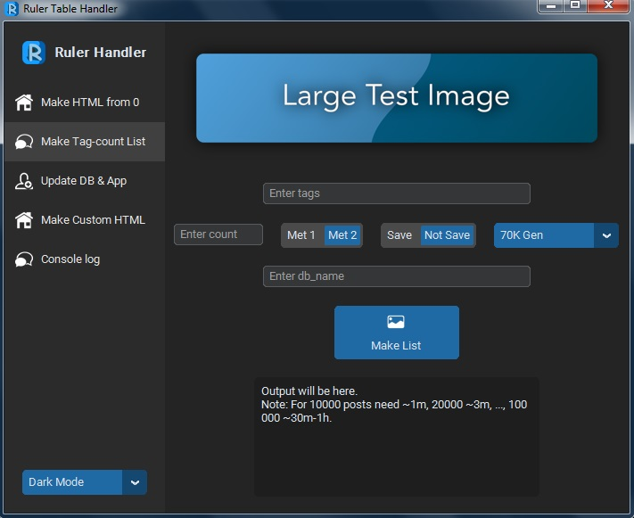
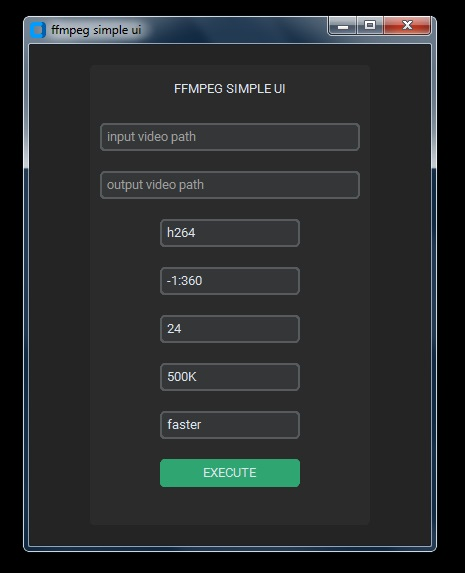
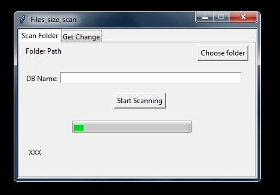
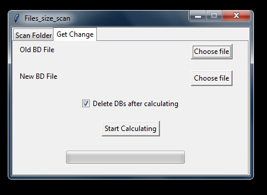
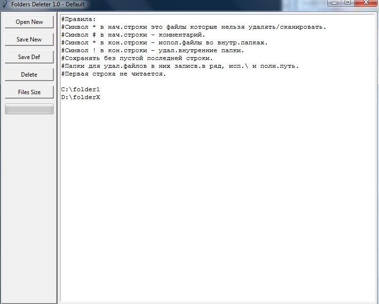
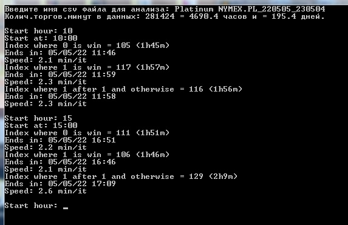
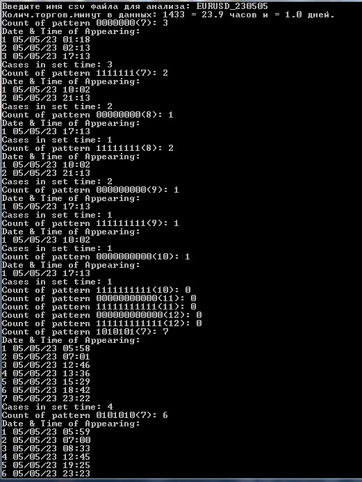
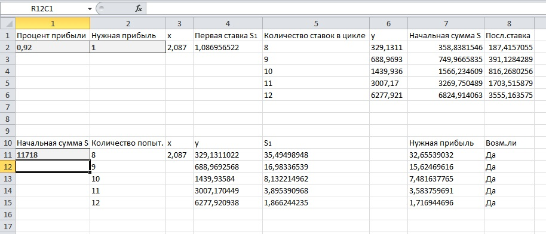
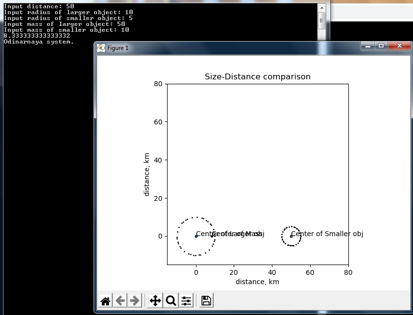
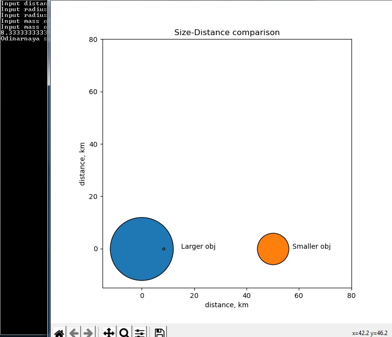
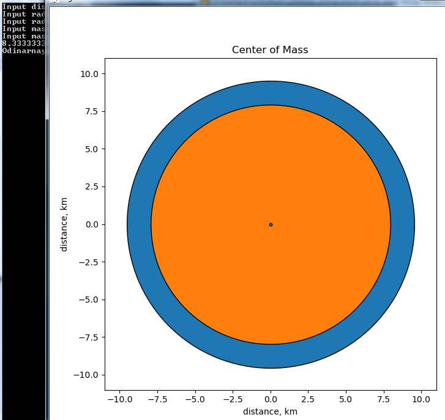
Перенес ключевую логику десктопного софта в формат веб-расширений для интеграции функций напрямую в интерфейс браузера. Реализовал модули мгновенного сохранения контента (функции быстрого менеджмента) по горячим клавишам, визуальную CSS-индикацию статусов, локальное кэширование и ведение статистики.
Организовал локальное хранение данных через chrome.storage.local и localStorage, что позволило минимизировать нагрузку на сеть, вести внутреннюю статистику просмотров и кэшировать JSON-базы для мгновенного поиска.
Могу использовать все функции из документации, то есть создать любое расширение. Могу разработать расширение под любой современный браузер.
Страница для поиска только среди сохраненных постов через общий поиск с фильтром по сохраненным постам. Ведение статистики просмотра видео на YouTube и отображение её на странице в расширении. Скрытие рекламы. Исправление отображения элементов сайта. Быстрое сохранение/копирование нужного элемента при нажатии на него. Минималистичный переводчик выделенного текста. Интерактивный просмотр закладок с превью YouTube-видео...
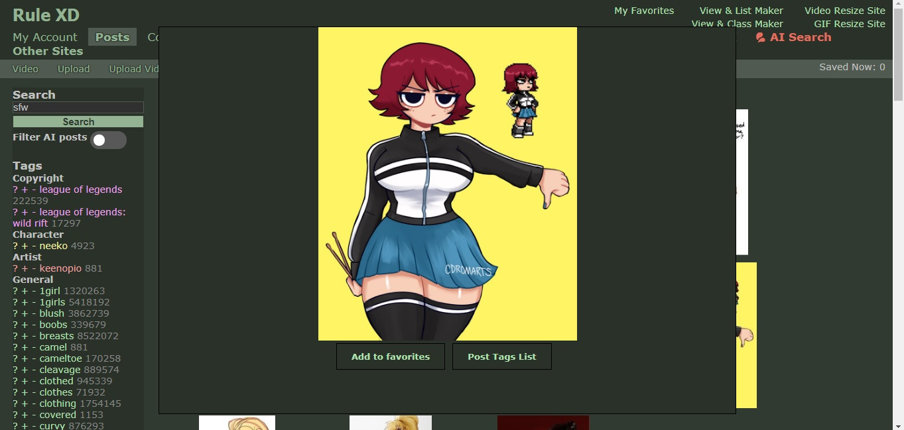
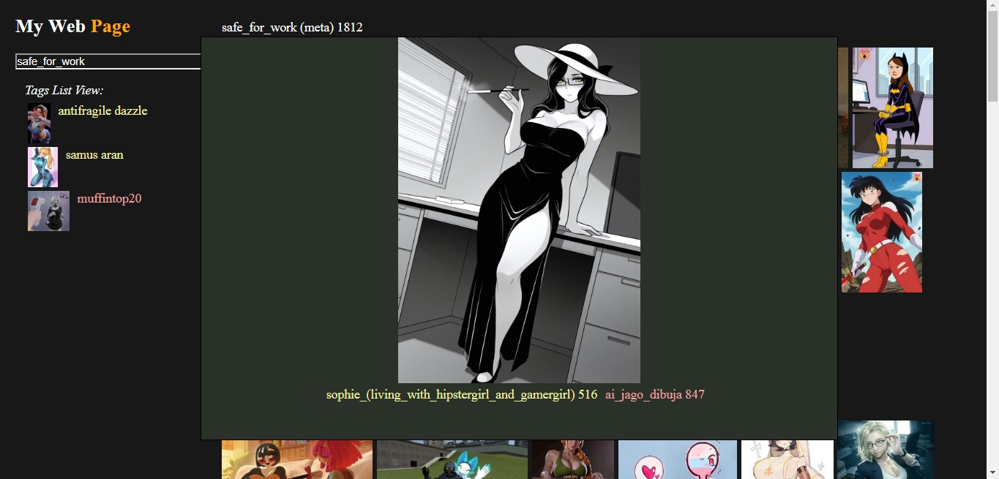
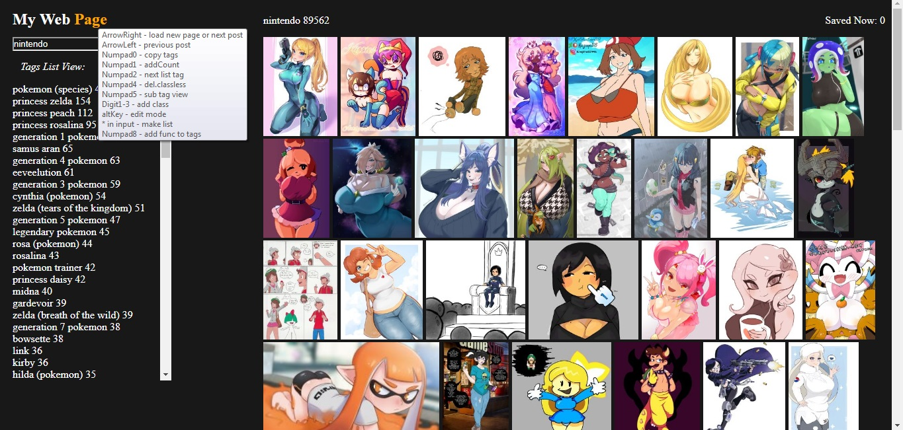
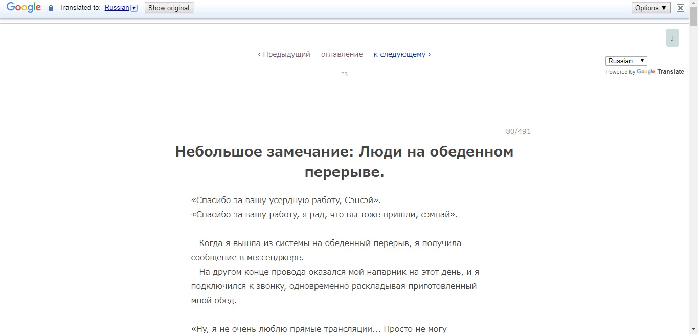
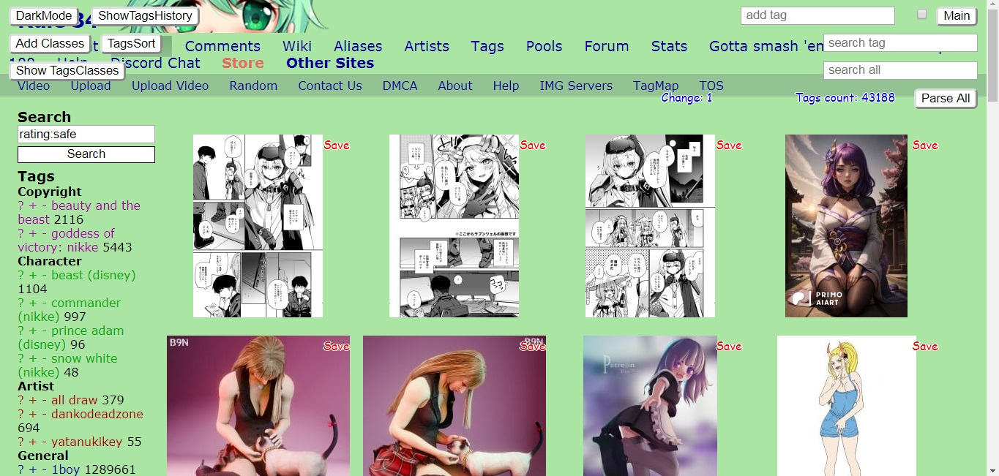